1v specimen
Pere Millán-Martínez
specimen.RmdThis is a specimen of the graphics that, up to now, are being considered by the brinton’s wideplot(), longplot() and plotup() functions and that only require 1 input variable.
Logical variables:

logical = c('line graph', 'point graph', 'point-to-point graph')
logical = c('tile plot', 'linerange graph')logical = c('binned heatmap', 'bw binned heatmap', 'color binned heatmap')
logical = c('bar graph', 'bw bar graph', 'color bar graph')Ordered factor variables:

ordered = c('line graph', 'point graph', 'point-to-point graph')
ordered = c('tile plot', 'linerange graph')
logical = c('binned heatmap', 'bw binned heatmap', 'color binned heatmap')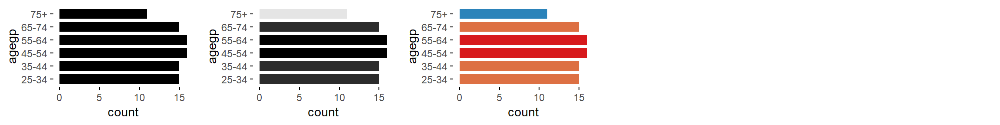
ordered = c('bar graph', 'bw bar graph', 'color bar graph')Factor variables:

factor = c('line graph', 'freq. reordered line graph', 'alphab. reordered line graph')
factor = c('point-to-point graph', 'freq. reordered point-to-point graph', 'alphab. reordered point-to-point graph')
factor = c('linerange graph', 'freq. reordered linerange graph', 'alphab. reordered linerange graph')
factor = c('point graph', 'freq. reordered point graph', 'alphab. reordered point graph')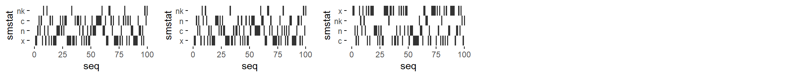
factor = c('tile plot', 'linerange graph')
factor = c('binned heatmap', 'bw binned heatmap', 'color binned heatmap')
factor = c('freq. reordered binned heatmap',
'bw freq. reordered binned heatmap',
'color freq. reordered binned heatmap')
factor = c('alphab. reordered binned heatmap',
'bw alphab. reordered binned heatmap',
'color alphab. reordered binned heatmap')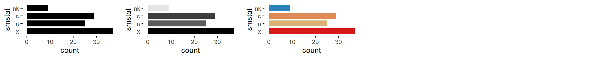
factor = c('bar graph', 'bw bar graph', 'color bar graph')
datetime = c('freq. reordered bar graph', 'bw freq. reordered bar graph', 'color freq. reordered bar graph')
datetime = c('alphab. reordered bar graph', 'bw alphab. reordered bar graph', 'color alphab. reordered bar graph')Character variables:
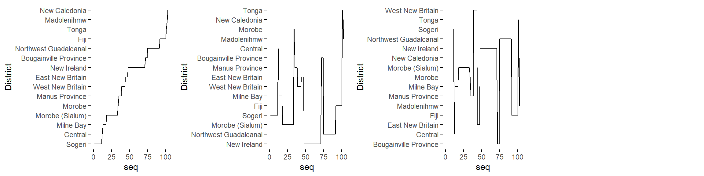
factor = c('line graph', 'freq. reordered line graph', 'alphab. reordered line graph')
factor = c('point-to-point graph', 'freq. reordered point-to-point graph', 'alphab. reordered point-to-point graph')
factor = c('linerange graph', 'freq. reordered linerange graph', 'alphab. reordered linerange graph')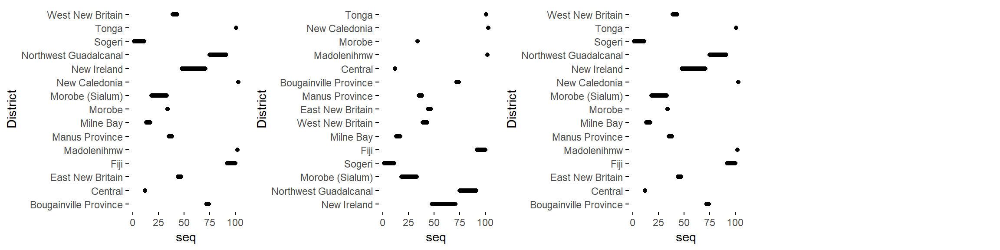
factor = c('point graph', 'freq. reordered point graph', 'alphab. reordered point graph')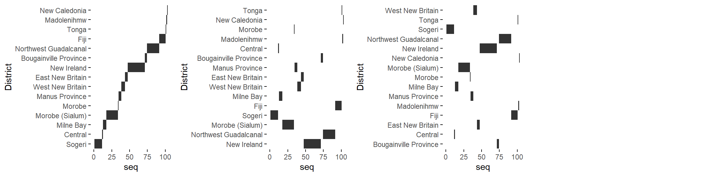
factor = c('tile plot', 'freq. reordered tile plot', 'alphab. reordered tile plot')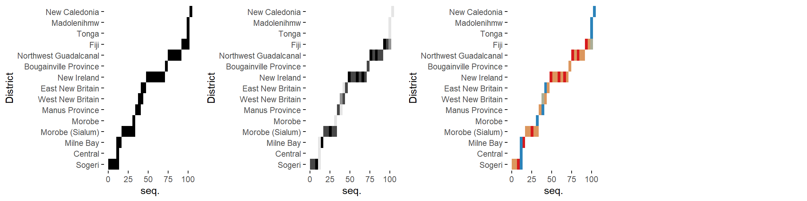
factor = c('binned heatmap', 'bw binned heatmap', 'color binned heatmap')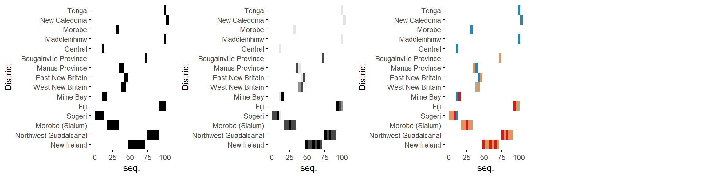
factor = c('freq. reordered binned heatmap',
'bw freq. reordered binned heatmap',
'color freq. reordered binned heatmap')
factor = c('alphab. reordered binned heatmap',
'bw alphab. reordered binned heatmap',
'color alphab. reordered binned heatmap')
factor = c('bar graph', 'bw bar graph', 'color bar graph')
datetime = c('freq. reordered bar graph', 'bw freq. reordered bar graph', 'color freq. reordered bar graph')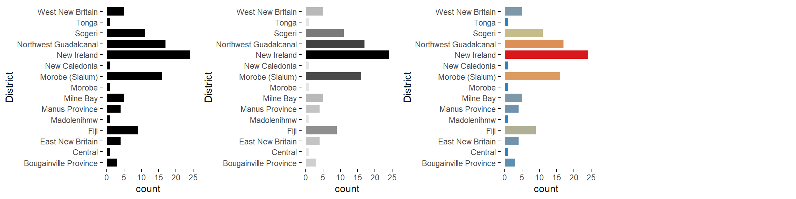
datetime = c('alphab. reordered bar graph', 'bw alphab. reordered bar graph', 'color alphab. reordered bar graph')Datetime variables:

datetime = c('line graph', 'stepped line graph')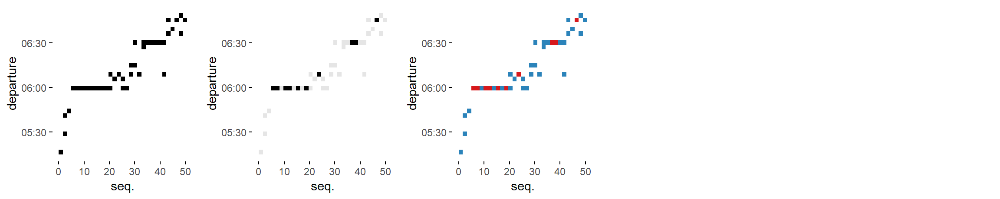
datetime = c('point-to-point graph', 'stepped point-to-point graph')datetime = c('point graph')
datetime = c('binned heatmap', 'bw binned heatmap', 'color binned heatmap')
datetime = c('bw heatmap', 'color heatmap')Numeric variables:

numeric = c('area graph', 'stepped area graph')
numeric = c('line graph', 'stepped line graph')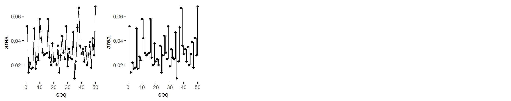
numeric = c('point-to-point graph', 'stepped point-to-point graph')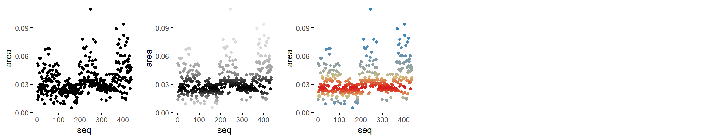
numeric = c('point graph', 'bw point graph', 'color point graph')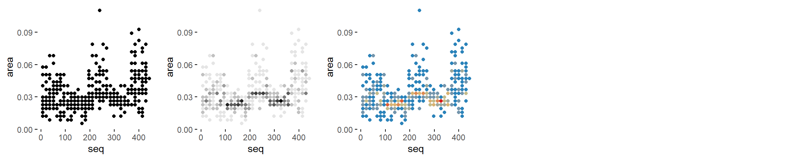
numeric = c('binned point graph', 'bw binned point graph', 'color binned point graph')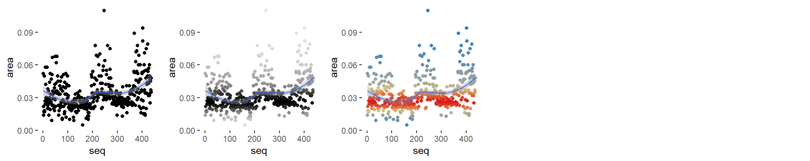
numeric = c('point graph with trend line', 'bw point graph with trend line', 'color point graph with trend line')
numeric = c('binned heatmap', 'bw binned heatmap', 'color binned heatmap')
numeric = c('bw heatmap', 'color heatmap')
numeric = c('stripe graph', 'bw stripe graph', 'color stripe graph')
numeric = c('binned stripe graph', 'binned stripe graph', 'binned stripe graph')
numeric = c('bar graph', 'bw bar graph', 'color bar graph')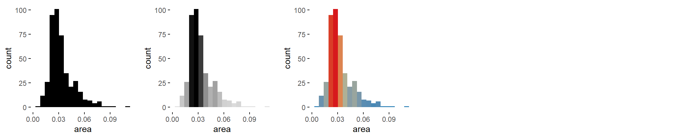
numeric = c('histogram', 'bw histogram', 'color histogram')
numeric = c('freq. polygon')
numeric = c('density plot', 'filled density plot')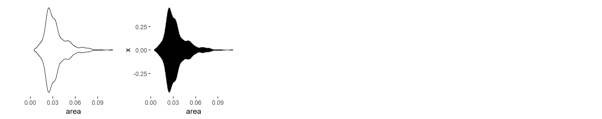
numeric = c('violin plot', 'filled violin plot')
numeric = c('box plot', '3 uniaxial', 'qq plot')